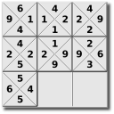
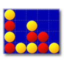

GNOME-Games
Dieser Artikel wurde für die folgenden Ubuntu-Versionen getestet:
Ubuntu 16.04 Xenial Xerus
Ubuntu 14.04 Trusty Tahr
Zum Verständnis dieses Artikels sind folgende Seiten hilfreich:
 Die GNOME-Games
Die GNOME-Games  ("Zwergenspiele") sind eine Spielesammlung aus inzwischen 17 einzelnen Spielen, die trotz ihres Namens wenig mit GNOME gemein haben. Sie sind grundsätzlich für jede auf der Grafikbibliothek GTK basierende Desktop-Umgebung wie Unity, Xfce, LXDE, MATE und Cinnamon geeignet. Selbst KDE-Nutzer sind nicht ausgeschlossen, müssen allerdings erst die entsprechenden Bibliotheken nachinstallieren (Anmerkung: von vielen Spielen gibt es native Varianten für KDE, die in den jeweiligen Unterartikeln genannt werden. Eine Übersicht liefert der Artikel KDE-Spiele).
("Zwergenspiele") sind eine Spielesammlung aus inzwischen 17 einzelnen Spielen, die trotz ihres Namens wenig mit GNOME gemein haben. Sie sind grundsätzlich für jede auf der Grafikbibliothek GTK basierende Desktop-Umgebung wie Unity, Xfce, LXDE, MATE und Cinnamon geeignet. Selbst KDE-Nutzer sind nicht ausgeschlossen, müssen allerdings erst die entsprechenden Bibliotheken nachinstallieren (Anmerkung: von vielen Spielen gibt es native Varianten für KDE, die in den jeweiligen Unterartikeln genannt werden. Eine Übersicht liefert der Artikel KDE-Spiele).
Der Schwierigkeitsgrad schwankt zwischen einfachen Geschicklichkeitsspielen bis hin zu anspruchsvolleren Spielen wie Schach oder Sudoku. Allen gemeinsam ist jedoch, dass es sich durchweg um Spieleklassiker handelt, die in ihren Ideen und Konzepten nichts an Aktualität eingebüßt haben.
Dieser Artikel dient als Übersichtsseite zu den enthaltenen Spielen, die in einzelnen Artikeln genauer beschrieben werden. In der folgenden Übersicht wird die deutsche Übersetzung (soweit vorhanden) verwendet, während sich die konkreten Artikelnamen an der englischen Originalbezeichnung orientieren.
Übersicht¶
In alphabetischer Reihenfolge.
| GNOME-Games | ||
 Aisleriot | Fünf in eine Reihe | Hitori |
| Klotski | Kniffel | Lichter aus |
| Mahjongg | Minenräumer | ") Othello (Reversi) |
| Robots | Schach | Snake |
| Sudoku | Swell Foop |  Tetravex |
| Tetris |  Vier gewinnt | |
Installation¶
 Obwohl sich jedes Spiel auf Wunsch einzeln installieren lässt (konkret wird das in den jeweiligen Unterartikel beschrieben), kann man auch alle Spiele auf einmal installieren. Dazu wird das folgende Metapaket benötigt [1]:
Obwohl sich jedes Spiel auf Wunsch einzeln installieren lässt (konkret wird das in den jeweiligen Unterartikel beschrieben), kann man auch alle Spiele auf einmal installieren. Dazu wird das folgende Metapaket benötigt [1]:
gnome-games (universe)
 mit apturl
mit apturl
Paketliste zum Kopieren:
sudo apt-get install gnome-games
sudo aptitude install gnome-games
Weitere Spiele¶
Ehemalige GNOME-Games¶
| Mastermind |
Folgende Spiele wurden im Laufe der Jahre wieder aus der Spielesammlung entfernt, können teilweise aber noch aus den offiziellen Paketquellen installiert werden:
Black Jack
GNOME Pipes
GNOME Untangle
Problembehebung¶
Spielstände werden nicht gespeichert¶
Bei Ubuntu 14.04 ist das Problem aufgetreten, dass Spielstände (Highscores etc.) nicht korrekt gespeichert werden. Abhilfe schafft das Ändern der Dateirechte:
sudo chmod 664 /var/games/*.scores
Siehe dazu den Fehlerbericht.
Links¶
GNOME Games - Wikipedia
Gtkboard
- ältere Spielesammlung, deren Weiterentwicklung eingestellt wurde, aber noch in den offiziellen Paketquellen enthalten (gtkboard)Simon Tatham's Portable Puzzle Collection
- weitere Spielesammlung, in den offiziellen Paketquellen enthalten (sgt-puzzles)Software für Kinder (siehe auch Kategorie/Kinder)
Spiele
 Übersichtsartikel
Übersichtsartikel
- Erstellt mit Inyoka
-
 2004 – 2017 ubuntuusers.de • Einige Rechte vorbehalten
2004 – 2017 ubuntuusers.de • Einige Rechte vorbehalten
Lizenz • Kontakt • Datenschutz • Impressum • Serverstatus -
Serverhousing gespendet von